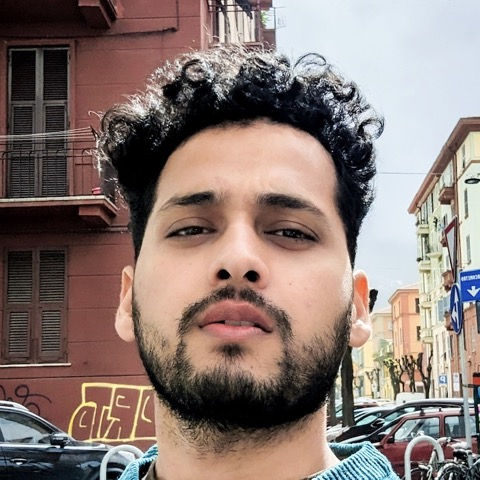

Hi, I'm Saurav.
I'm a backend and distributed systems engineer in London. For the last four years I've been at Amazon, working on Prime Video's playback systems: services that handle more than 500,000 requests a second for millions of customers.
Before that I built software in Singapore at Carousell and Works Applications. I studied Computer Science at IIT Guwahati.
What I'm interested in
- Distributed systems Building services that stay fast and reliable at very high scale.
- Technical leadership Setting direction on large migrations, working across teams, and mentoring engineers.
- AI and LLM tooling Building AI agents that do real work. I've shipped two into my team's daily operations.